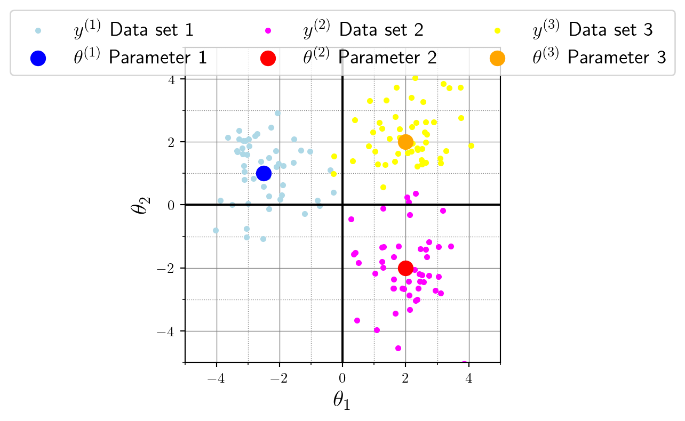

![]()
import numpy as np
import tensorflow as tf
import tensorflow_probability as tfp
tfd = tfp.distributionsSimulations rock!
Computer simulations play a major role in many areas of our lives, and it’s hard to overstate their relevance. Particularly in the sciences, simulators often represent the core of a scientific theory. For example, the drift diffusion model (DDM) from cognitive science models a binary decision process as a random walk with two thresholds.
üëÜ In this video, the lines indicate the evidence accumulation process over time (\(x\)-axis) until one of the thresholds (top or bottom) is reached. When a threshold is reached, the decision has taken place and the time-to-decision is recorded. This mechanistic model can easily be turned into a Python program, which is left as an exercise to the reader.
If you think about it for a moment, you might naturally wonder:
- How far are these thresholds apart?
- Is the starting point always in the middle? What if I start my decision process in favor of the blue outcome?
- What is the average slope of the random walk?
- The decision process doesn’t start right away, I’ll have to process the instructions first.
And you’re absolutely right! What I’m trying to show here: This mechanistic simulator has parameters. Following the order of the questions above, a drift diffusion model is parameterized by a threshold \(a\), a bias \(z\), a drift rate \(v\) and a non-decision time \(t\) (see below).
If we define a set of parameters \((a=2, z=1, v=0.3, t=0.5)\), we can run the simulator and generate synthetic data \(y\) according to the mechanistic model, just like in the video above. This is called a forward problem: We specify parameters \(\theta\) and run the forward simulator to get \(y\sim p(y\mid\theta)\). If you’re into statistics, you might recognize \(p(y\mid\theta)\) as a likelihood.
Coding our own forward simulation program
Implementing a drift diffusion model from scratch might be a bit of an awkward thing to start with, so we simplify things. We implement a linear Gaussian model (aka. normal distribution) with a two-dimensional parameter \(\theta\) and two-dimensional data \(y\).
I use tensorflow_probability in this blog post because it supports batch simulations out-of-the-box. The inconvenience of installing tensorflow and doing a few numpy conversions are swept away by the powers of batch simulations.
Simulator
The simulator takes a parameter \(\theta\), does its simulator thing, and outputs data \(y\). What happens inside the simulator is between you and god the mechanistic model that you’re coding up. For our simple Gaussian model, the parameter \(\theta\) is the location (i.e., mean) of the distribution. The covariance is fixed to \(1\) to keep things simple.
Important: The distribution is 2-dimensional, so a single \(\theta\) also has two dimensions. The first component of \(\theta\) is the location on the \(x\)-axis, the second component of \(\theta\) determines the location on the \(y\)-axis.
theta = np.array([[-1.0, 1.0]])
print(theta.shape)(1, 2)
Note
Note: I initialize theta as (1, 2) rather than a flat (2, ). Later on, that’s gonna be useful when we want to simulate a batch of data sets at once.
This \(\theta=(-1, 1)\) will be the location (i.e., mean) of our 2D normal distribution. Now we just have to simulate some data around this location. It’s up to us to choose how many data points we want to generate. Inspired by the empirical sciences, this very number of data points is called the number of observations or num_observations in our code. We default this to 50 to keep the function calls tidy, but we could modify that at any time.
def simulator(theta, num_observations = 50):
distribution = tfd.MultivariateNormalDiag(loc=theta, scale_diag=[1., 1.])
y = distribution.sample([num_observations])
y = tf.transpose(y, [1, 0, 2]) # change to num_datasets, num_observations, D
return y.numpy()
y = simulator(theta)That’s our simulator with a straightforward API:
- Input: Parameter \(\theta\in\mathbb{R}^{\text{num\_datasets}\times K}\), where \(K\) is the parameter dimension (\(K=2\) in our case because we need a 2-component location information)
- Output: Data \(y\in\mathbb{R}^{\text{num\_datasets}\times \text{num\_observations}\times D}\), where \(D\) is the data dimension (\(D=2\) in our case because we have a 2-dimensional Gaussian).
Note
In many papers, this simulator is denoted as \[y\sim\mathcal{N}(\theta, \boldsymbol{1}),\] where both the number of observations and the data/parameter dimensions are implicit here. An alternative variant is the formulation on the observation-level: \[y_m \sim \mathcal{N}(\theta, \boldsymbol{1})\;\;\text{for}\;m=1,\ldots,M\] üëÜ In this notation, each single data point (one of the orange dots in the plot below) is denoted as \(y_m\) and the total number of observations num_observations is abbreviated as \(M\).
Yet another variant makes the dimensionality of the Gaussian explicit with a subscript such as \(\mathcal{N}_2\) for our 2-dimensional Gaussian.
Let’s check that all shapes match in our code:
theta = np.array([[-1.0, 1.0]])
y = simulator(theta)
print(theta.shape) # should be (1, 2)
print(y.shape) # should be (1, 50, 2)(1, 2)
(1, 50, 2)Here’s a visualization for the data \(y\) (orange), relative to the location parameter \(\theta\) (blue) of the data-generating Gaussian distribution:
Batch simulation
theta = np.array([[-2.5, 1.0], [2.0, -2.0], [2.0, 2.0]])
y = simulator(theta)
print(y.shape)(3, 50, 2)Now things are getting interesting for batch-scale simulations! We first specified three parameter vectors, namely
- \(\theta^{(1)} = (-2.5, 1.0)\),
- \(\theta^{(2)} = (2.0, -2.0)\), and
- \(\theta^{(3)} = (2.0, 2.0)\).
Then, we plug this (3, 2) shaped parameter matrix into the simulator. Internally, the simulator slices the parameters along the first axis and generates a data set for each slice. This means that the first data set will have the location parameter \(\theta^{(1)} = (-2.5, 1.0)\), or formally:
\[ y^{(1)} \sim \mathcal{N}(\theta^{(1)}, \boldsymbol{1}) \]
Similarly, the second data set will be based on the second slice, and so on. Viewed as a single-step process, we create a batch of parameters and simultaneously generate a batch of data. This connection between parameter slice and generated data is obvious once we visualize it:

We end this section on batch simulation with a few notes on notation. Notation is a powerful tool, but it always bears the danger to become overly verbose and jeopardize the clarity of your work. Here, I’m not trying to use convoluted overloaded notation for the sake of it. Instead, I’m just trying to show you that this heavy notation is really just a systematic way to express how we slice stuff up and batch it in programming languages.
Notation
Recall that we generated 3 data sets \(y^{(1)}, y^{(2)}, y^{(3)}\). This can be expressed with the shorthand set notation \(\{y^{(i)}\}_{i=1}^N\) where \(N=3\) is the total number of data sets. So this is basically a set of data sets, and it is indexed by \(i=1,\ldots, N\).
Further, each data set \(y{(i)}\) has \(M=50\) observations. We could, for instance, write \[ y^{(1)} = \{y^{(1)}_1, y^{(1)}_2, y^{(1)}_3, \ldots, y^{(1)}_{50}\} \] to refer to the single observations in the first data set \(y^{(1)}\). For exampe, the seventh observation (one small dot in the plots) of the second data set is \(y^{(2)}_7\).
If we ignore the inconvenience of 0-based (Python) vs. 1-based (math) indexing for a moment, the code access does just what our mathy indices do. Recall that the data y have shape (num_datasets, num_observations, D) and the parameters have shape (num_datasets, K). Similarly, we access the first data set \(y^{(1)}\) and the first parameter vector \(\theta^{(1)}\) as:
first_dataset = y[0, :, :] # first data set, all observations, all data dimensions
first_parameter = theta[0, :] # first data set, all parameter dimensions
plt.scatter(first_dataset[:, 0], first_dataset[:, 1])
plt.scatter(first_parameter[0], first_parameter[1])That’s enough notation for now. Back to modeling!
Prior
If we’re interested in a probabilistic model, we can treat the mechanistic model parameter \(\theta\) as a random variable itself. So now, \(\theta\) is not restricted to \((-1, 1)\) as above. Instead, we place a suitable distribution \(p(\theta)\) over the parameter. That’s called a prior distribution and it’s just a way of saying “these values for \(\theta\) are reasonable for the mechanistic model”. This really sounds more complicated than it is. Let’s just use a uniform distribution for simplicity here. What about \([-2, 0]\) in \(x\)-direction and \([-1, 1]\) in \(y\)-direction?
def prior(num_simulations=1):
distribution = tfd.Independent(tfd.Uniform(
low=[ -3.0, -1.0], # both lower limits
high=[ 1.0, 2.0]), # both upper limits
reinterpreted_batch_ndims=1)
theta = distribution.sample([num_simulations])
return theta.numpy()theta = prior(20)This batched sampling statement returns 20 two-dimensional parameter vectors. Notationally, we can refer to those as \(\theta^{(1), \theta^{(2), \ldots, \theta^{(100)}\), or again in abbreviated set notation as \(\{\theta^{(i)}\}_{i=1}^N\) where \(N=20\) is the total number of desired data sets. In the next section, I will bring it all together and explain why this is also the number of data sets even though those are just the parameters. Here‚Äôs a visualization of these 20 parameter vectors in 2D space. See how the sampled parameter values all lie nice and tight within our uniform bounding box that we defined in the prior distribution ü§©:
Data generation
To sum up, we have the following components for a model with data dimension \(D\) and parameter dimension \(K\):
- A
simulator(theta, num_observations)function \(f:\theta \mapsto y\) with input \(\theta\in\mathbb{R}^{\text{num\_datasets}\times K}\) and output \(y\in\mathbb{R}^{\text{num\_datasets}\times\text{num\_observations}\times D}\). - A
prior(num_datasets)function with argumentnum_datasets(but no random variable as input) and output \(\theta\in\mathbb{R}^{\text{num\_datasets}\times K}\).
So basically, we can build a simple pipe simulator(prior(num_datasets)) because the simulator can infer num_datasets from \(\theta\). After all, we choose to fix num_observations for convenience, and we naturally fix the data dimension \(D\) as well as the parameter dimension \(K\) when we define the model. That means the only argument that remains to specify is the number of data sets.
def generative_model(num_simulations):
theta = prior(num_simulations)
y = simulator(theta)
return theta, yThis pipe is called a generative model or forward model because it combines the prior \(p(\theta)\) with the likelihood \(p(y\mid\theta)\). Mathematically, it implements the joint model:
\[ \underbrace{p(\theta, y)}_{\text{joint}} = \underbrace{p(\theta)}_{\text{prior}}\,\underbrace{p(y\mid\theta}_{\text{likelihood}}) \] and that’s exactly how we call it with the simple API we just threw together:
theta, y = generative_model(10)For each of the 10 parameter vectors \(\theta{(i)}\), we get one data set \(y^{(i)}\). Each cell of the following plot shows the \(i^{th}\) parameter vector (large dot, solid blue) and the corresponding \(i^{th}\) data set it generated (small dots, sky blue).
Notation
\[(\theta, y) \sim p(\theta, y)\]
One draw from the generative model (i.e., one execution of generative_model(1)) returns the tuple \(\Big(\theta^{(i)}, y^{(i)}\Big)\equiv\Big(\theta^{(i)}, \{y^{(i)}_1, \ldots, y^{(i)}_{M}\} \Big) \equiv \Big(\theta^{(i)}, \{y^{(i)}_m\}_{m=1}^M \Big)\).
Behind the scenes, the joint model is factorized into the prior and likelihood, and the step-wise sampling process with detailed notation would be:
\[ \begin{aligned} \theta^{(i)} &\sim p(\theta) \\ y^{(i)}_m &\sim p(y\mid\theta^{(i)})\quad \text{for}\;m=1,\ldots,M \end{aligned} \]
Learning from the joint model \(p(\theta, y)\)
If you want to learn this forward problem (or the inverse problem; see below) from the joint model simulator, you’ll usually try to learn a map between one such parameter draw \(\theta^{(i)}\) and the corresponding data set \(y^{(i)}\equiv\{y^{(i)}_m\}_{m=1}^M\).
Simulation budget
When we say that some approximate algorithm \(q_{\phi}(\cdot)\) with learnable weights \(\phi\) is being trained on a simulation budget of, say, \(N=1\,024\), this means that all the approximate algorithm ever sees as examples from the joint model are \(N=1\,024\) tuples of parameters and data.
In other words, image that you only get this single call to the generative model:
N = 1024
theta, y = generative_model(N)
print(f"parameter shape: {theta.shape}")
print(f"data shape: {y.shape}")parameter shape: (1024, 2)
data shape: (1024, 50, 2)So you get \(N=1\,024\) ‘ground-truth’ pairs of data and parameters to work with, and that’s all.
What’s next? Inverse problems, baby!
Now that we have a nice and tidy data generating process, we can do all sorts of modeling. So far, we only considered the forward problem \(\theta\mapsto y\) from parameters \(\theta\) to data \(y\). But what about the inverse problem, where we start with some observable data \(y\) and want to reason about the parameters \(\theta\) that might have generated the observed data \(y\)? If we express this question in a mathematical way, we are interested in the so-called posterior distribution \(p(\theta | y)\).
A closing example: I give you a record of reaction times from a decision experiment (see the video at the very beginning of this post). You only get the red and blue histograms, nothing more. Now you shall tell me which cognitive parameters \(\theta=(a,z,v,t)\) could have generated this observed data set, along with a full probability distribution on this answer. Sounds tough? Yep, it is computationally intense to solve this question for complex problems. But there is a growing toolkit of tailored methods, and with our forward model simulations we have just laid the foundation to tackle the most recent wave of methods: Simulation-based inference with neural networks! ü•≥
Do you want to read a similar style post about a crash course in neural network based solutions for inverse problems? Please let me know and I’ll try to find the time!
References
Vinding, M. C., Lindeløv, J. K., Xiao, Y., Chan, R. C. K., & Sørensen, T. A. (2018). Volition in Prospective Memory: evidence against differences in recalling free and fixed delayed intentions. Center for Open Science.